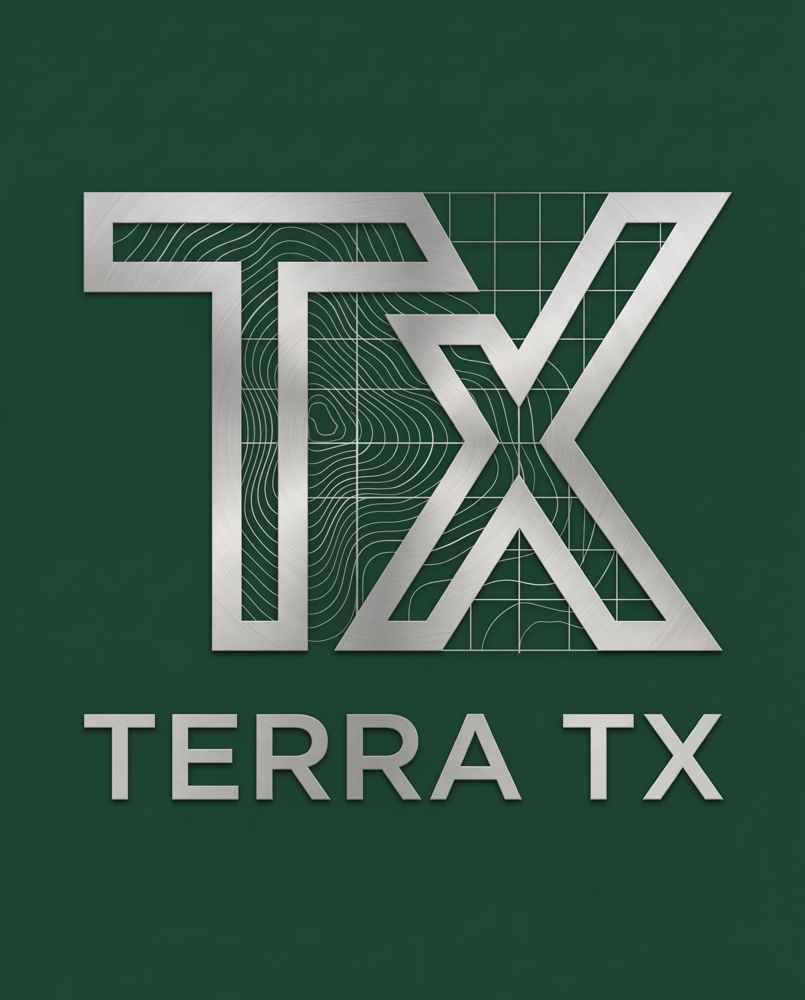

林業従事者自らが、現場のためにアプリを作っています。
既存の現場用アプリには、現場の実情に合わないものが多いと感じてきました。そこで、自らが使いたいと思えるツールを、自らの手で開発することにしました。
「現場の負担を軽減すること」と「現場の実データを収集すること」。この二つは本来相反する要素ですが、設計次第で両立が可能です。
また、林業の現場の多くは電波の届かない環境にあります。オフラインで確実に動作することは、開発における前提条件としています。
林業技能検定1級・2級相当の実技試験（受け口・追い口作成作業）を、自分の測定値でその場で採点。練習を重ねるほど苦手な項目が見える化されます。
世界伐木チャンピオンシップ（WLC）の公式採点基準に準拠した、アスリート向けタイム計測・採点・トレーニング分析ツール。